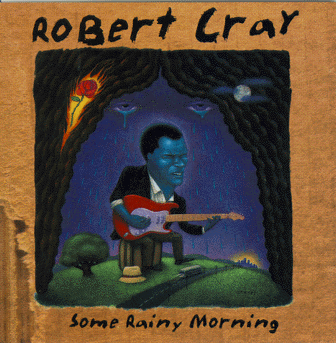

Some Rainy Morning - Robert Cray

 Songs on the CD
Songs on the CD
- Moan (R. Cray)
- I'll Go On (R. Cray)
- Steppin' Out (Randle, Grimes, Hall)
- Never Mattered Much (R. Cray)
- Tell The Landlord (R. Cray, K. Sevareid, K. Hayes)
- Little Boy Big (R. Cray)
- Enough For Me (R. Cray, K. Hayes)
- Jealous Love (Womack, Ousley)
- Will You Think Of Me (R. Cray)
- Holdin' On (J. Pugh)
Musicians:
Robert Cray - vocals and guitar
Jim Pugh - organ and piano
Karl Sevareid - bass
Kevin Hayes - drums
Some brief credits:
© 1995 Polygram records, Inc.
Producer - Robert Cray
Direction - Mike Kappus - The Rosebud Agency
Cover Illustration - Keith Graves
Photography - Jeff Katz
Art Director - Michael Bays
Design - Jeffery L. Schulz
Other Some Rainy Morning Links
Back to my Cray page
Created: 8/4/95
By: rwhiffen
Mod: 7/17/03